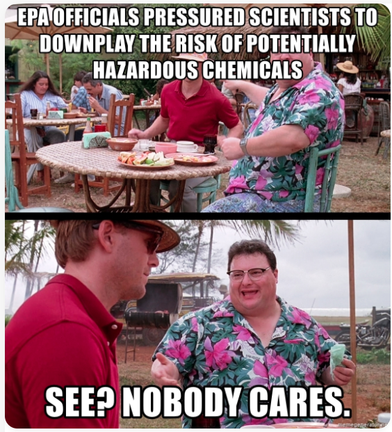

Side Effects May Include a Weakened Geopolitical Response
3.6.22
Thank you for reading This Week Outside, a weekly climate and environmental news round-up. On today’s agenda:
- We’ll look at how dependence on foreign oil undercuts the United State’s ability to respond to the Russian invasion of Ukraine.
- We’ll check in on an ongoing saga centered on EPA officials who pressured scientists into expediting approval of certain chemical products.
- We’ll also look at a new map highlighting threatened pockets of biodiversity in the United States.
Without further ado, let’s see what’s been happening outside!
Fossil Fuel-Dependence Dampens US Response to Russian Invasion of Ukraine
The week kicked off to a slippery start as the United States released 30 million barrels of oil from the Strategic Petroleum Reserve. Please note that these barrels represent only about 5% of our current reserves, and the United States consumes nearly 20 million barrels per day. Although the reserve oil is anticipated to either lower prices or buoy the market from future surges, it will be several weeks before oil consumers — read most of us — feel any relief.
Inflated gas prices alone serve as a painful reminder that the United States is fighting tooth and nail against building sustainable energy infrastructure. US dependence on foreign oil also weakens our geopolitical autonomy. In a conversation with Briahna Joy Gray on the Bad Faith podcast, Ken Klippenstein of The Intercept discussed how US reluctance to invest in green energy has put the country in a vulnerable position when faced with the current Russian-Saudi partnership. Former President Barack Obama drove Saudi Crown Prince Mohammed bin Salman Al Saud (MBS) into the frosty embrace of Vladimir Putin when he declined to meet with the prince during Obama’s second term.
Now, President Joe Biden is stuck between a rock and a hard place, not wanting to condone Saudi Arabia’s human rights violations while simultaneously depending on Saudi oil to power the nation. Meanwhile, Russia, which “exports more oil than any other country,” according to Phillips and Mufson, is benefitting enormously from the elevated oil prices. Russia’s booming oil industry cushions the economic blow that sanctions might otherwise have had.
Read Anna Phillips and Steven Mufson’s “U.S., other world powers to tap strategic oil reserves in bid to ease gasoline prices” in The Washington Post.
Read Ken Klippenstein’s “Saudi-Russia Collusion is Driving Up Gas Prices — and Worsening Ukraine Crisis” in The Intercept.
Listen to Briahna Joy Gray’s “Episode 155 — This Mortal Oil” on the Bad Faith podcast.
EPA Pressured Scientists to Downplay the Risks of Chemical Products
Sharon Lerner at The Intercept has been following this EPA drama for a while. Whistleblowers at the EPA claim that officials in the department pressured scientists to prioritize industry interests over American public health. The Public Employees for Environmental Responsibility, a non-profit representing EPA staff scientists, released documents that revealed three names of officials implicated in these allegations: Todd Stedeford, Iris Camacho, and Tala Henry.
My favorite anecdote so far from this cynical tale is the flight of Todd Stedeford from the EPA for Bergeson & Campbell, “a law firm that helps chemical companies navigate the regulatory process.” My guy went full turncoat, essentially playing the role of Dennis Nedry from Jurassic Park. A true inspiration for invertebrates everywhere.
Read Sharon Lerner’s “Documents Reveal Identities of Three EPA Officials Who Downplayed Chemical Hazards” in The Intercept.
A New Roadmap to Preserving US Biodiversity
NatureServe, a non-profit that collects biodiversity data from organizations and scientists across North America, released a map highlighting imperiled areas of biodiversity in the US. The map draws attention to zones where human activity has threatened species to the brink of extinction and considers over 2,200 “at-risk” species in its assessment. NatureServe also superimposed a map of protected areas in the United States to illustrate the extent to which these species fall outside federal, state, and local protections.
Catrin Einhorn and Nadja Popovich wrote about the map for The New York Times, zeroing in on species that have suffered the most under the White-American occupation of the continent. Careless logging, mining, and grazing coupled with indiscriminate damming of rivers and other construction have harried species of freshwater mussels, bats, and salamanders — among others — over the years.
Read Einhorn and Popovich’s article “This Map Shows Where Biodiversity Is Most at Risk in America” in The New York Times.
That concludes the national environmental and climate news. I also saw a press release from the NC Department of Environmental Quality this week that Gov. Roy Cooper announced funding for “$164 million for water and sewer improvement projects.” I’m not sure if this is related to the financing North Carolina received from the American Rescue Plan, in which legislators earmarked $1.58 billion for water and sewer infrastructure projects, but this might be an interesting story to follow.
Thank you for reading, and please let me know what I missed. Your comments are appreciated, and you can also reach me via Twitter or email if you have article suggestions or feedback about the series.